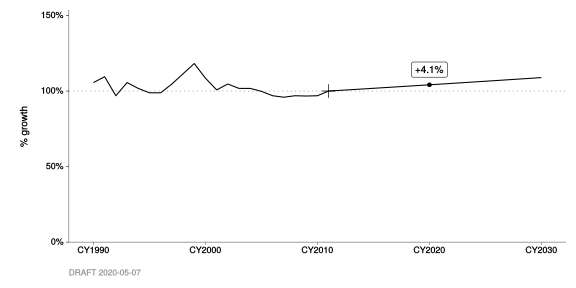

A Advanced Usage
A.1 Calculating county fractions from raw growth profile data
In the chapter on Growth profiles, things ended with a look at “raw” county-specific growth profile data for BY2011 category #761 “Sanitary Sewers”. And, we could see that the raw data looked a lot like population counts.
This means that we can double-check the BY2011 county fractions, stored in file t1325, against fractions that we compute right here using the raw growth profile data.
Sanitary Sewers example
Let’s try this with our “Sanitary Sewers” example (which was linked to growth profile #657).
#
# Double-check the crosswalk. Category #761 "Sanitary Sewers" should be
# associated with growth profile #657 "Household Population".
#
BY(2011) %>%
DB_growth_profile_crosswalk() %>%
filter_categories(
"Sanitary Sewers" = 761) %>%
ensure(
.$gpf_id == 657)| cat_id | cat_h0 | gpf_id | backcast | forecast | category |
|---|---|---|---|---|---|
| 761 | Area Source | 657 | TRUE | TRUE | Sanitary Sewers |
#
# Compute county fractions from the raw growth profile data.
#
# - Extract just the CY2011 values.
# - Create a new column `cnty_frac`.
#
BY2011_raw_growth_profile_data %>%
filter(
gpf_id == 657) %>%
filter_years(
CY(2011)) %>%
mutate(
cnty_frac = gf_qty / total(gf_qty))| gpf_from | gpf_id | year | gf_qty | cnty_abbr | gpf_name | gpf_staff | gpf_date | cnty_frac |
|---|---|---|---|---|---|---|---|---|
| t0336 | 657 | CY2011 | 1535560 | ALA | Household Population | Minh H Nguyen | 2010-02-25 | 0.2168986 |
| t0336 | 657 | CY2011 | 1086820 | CC | Household Population | Minh H Nguyen | 2010-02-25 | 0.1535139 |
| t0336 | 657 | CY2011 | 245700 | MAR | Household Population | Minh H Nguyen | 2010-02-25 | 0.0347053 |
| t0336 | 657 | CY2011 | 134080 | NAP | Household Population | Minh H Nguyen | 2010-02-25 | 0.0189389 |
| t0336 | 657 | CY2011 | 794560 | SF | Household Population | Minh H Nguyen | 2010-02-25 | 0.1122320 |
| t0336 | 657 | CY2011 | 728160 | SM | Household Population | Minh H Nguyen | 2010-02-25 | 0.1028530 |
| t0336 | 657 | CY2011 | 1815700 | SNC | Household Population | Minh H Nguyen | 2010-02-25 | 0.2564686 |
| t0336 | 657 | CY2011 | 309080 | SOL | Household Population | Minh H Nguyen | 2010-02-25 | 0.0436577 |
| t0336 | 657 | CY2011 | 429960 | SON | Household Population | Minh H Nguyen | 2010-02-25 | 0.0607321 |
In the new cnty_frac column, we can see percentages of 21.7%, 15.4%, 3.5%, 1.9%, 11.2%, 10.3%, 25.6%, 4.4%, and 6.1%, respectively.
County fractions pulled from DataBank
Now, let’s compare those to what’s stored in DataBank as “published” (file t1325, accessed via DB_county_fractions()).
#
# Pull the "published" county fractions for BY2011 (stored in `t1325`).
#
BY(2011) %>%
DB_county_fractions(
verbose = TRUE) %>%
filter(
cat_id == 761)| year | cat_id | cnty_abbr | cnty_frac |
|---|---|---|---|
| BY2011 | 761 | ALA | 0.2185224 |
| BY2011 | 761 | CC | 0.1331767 |
| BY2011 | 761 | MAR | 0.0401685 |
| BY2011 | 761 | NAP | 0.0188647 |
| BY2011 | 761 | SF | 0.1298252 |
| BY2011 | 761 | SM | 0.1096952 |
| BY2011 | 761 | SNC | 0.2560921 |
| BY2011 | 761 | SOL | 0.0394379 |
| BY2011 | 761 | SON | 0.0542175 |
We can see some mismatches, but there could be good reasons for them. This is just intended to show you how you can do the double-checking.
B Special Cases
B.1 Changes in forecasts for category #283
You might have noticed that the throughput forecast, for category #283, doesn’t follow the same trajectory as the NOx forecast.
This is not because NOx emission factors were projected to increase after CY2011. Here’s what happened:
- The BY2011 criteria-pollutant calculations were completed.
- The growth profile for this category, in DataBank, was updated.
- The BY2011 GHG calculations were completed.
Here are some basic exercises (and charts) that may shed some light.
#
# This is the growth in NOx emissions from BY2011 category #283, via the
# published inventory (`BY2011_annual_emission_data`).
#
BY2011_annual_emission_data %>%
filter_categories(
283) %>%
filter_pollutants(
"NOx") %>%
chart_annual_growth(
base_year = CY(2011),
flag_years = CY(2020)) 
#
# This is the growth profile assigned to category #283 via file `t1325`.
# It's not consistent with the published emission forecast (above).
#
BY2011_growth_profile_data %>%
filter_categories(
283) %>%
chart_annual_growth(
base_year = CY(2011),
flag_years = CY(2020)) 
#
# This is the growth in emissions, via the reproduced inventory. It's consistent
# with the assigned growth profile, but not with the published forecast.
#
BY2011_area_source_projection_data %>%
filter_categories(
283) %>%
filter_pollutants(
"NOx") %>%
chart_annual_growth(
qty_var = "ems_qty",
base_year = CY(2011),
flag_years = CY(2020)) #
# This is the growth in throughputs, via the reproduced inventory. It's also
# consistent with the assigned growth profile, and with the reproduced
# emissions, but not with the published forecast.
#
BY2011_area_source_throughput_data %>%
filter_categories(
283) %>%
chart_annual_growth(
qty_var = "tput_qty", # changed from "ems_qty" to "tput_qty"
base_year = CY(2011),
flag_years = CY(2020)) 
If it still doesn’t make sense, please feel free to raise a question at one of our meetings!
C Technical Documentation
C.1 Control factors
Documentation for three key functions is printed out below.
DB_control_factors()is a legacy-format API for DataBank (t0326). In its output,Cd,Ed, andEpare key. Seehelp(t0326)as well.annualize_DB_control_factors(), which itself depends oncalculate_Fd_and_Fc(), implements the annualization algorithm mentioned in the chapter on Control factors. The References section ofhelp(calculate_Fd_and_Fc)contains a reference to a PDF that describes the algorithm in several pages.
| DB_control_factors | R Documentation |
DB_control_factors
Description
Retrieve control factors (keyed by category and date) for a given base year.
You have two choices:
-
DB_raw_control_factors(), for data organized in legacy format; or -
DB_control_factors(), for a tidier version of the same information.
Usage of the latter is recommended. You will generally want to pipe its result through
annualize_DB_control_factors() before (a) supplying it to
BY_area_source_projections(), (b) charting it, or (c) combining it with other
annual data.
See the Details and Examples, below, as well as the documentation for the functions above.
Usage
DB_control_factors(base_year, na.rm = TRUE, verbose = getOption("verbose"))
DB_raw_control_factors(base_year, verbose = getOption("verbose"))
Arguments
base_year
|
see |
na.rm
|
drop records where |
verbose
|
display informative messages |
Details
IMPORTANT: cf_qty is the uncontrolled fraction, not the controlled fraction.
You should multiply things by cf_qty, not (1 - cf_qty).
In the data returned by DB_control_factors(), Cd is “the maximum percent
emission reduction expected from all the changes in equipment, materials and
operations due to the regulation.”
In the data returned by DB_raw_control_factors(), the values PM through
CO correspond to the same Cd for each controlled pollutant, respectively.
(Same data, but in “wide”, rather than “long”, format.) They are also returned
as percentages (between 0 and 100), rather than fractions (between 0.0 and 1.0).
Value
Tabular data, with the following columns:
-
cat_idis the relevant (DataBank) category. -
pol_id(andpol_abbr) is the relevant pollutant. There may be more than one, for a given regulation. -
Edis “Regulation Effectiveness. It represents the degree of compliance, in percent, for a given pollutant, or the degree to which the actual control approachesCd.” -
Epis “Previous Regulation Effectiveness, in percent (equals O if emissions previously uncontrolled).” -
cf_dateis the effective date of the relevant regulation. -
cf_descis a description or note entered by staff. -
reg_abbris a more human-readable version ofreg_id. -
reg_nameis the full name of the relevant regulation.
Functions
-
DB_control_factors: provides data organized in “legacy format” (slightly tidier thant0326, withCdpivoted bypol_abbr). -
DB_raw_control_factors: provides data in the same format ast0326.
References
-
See
Tracking Emissions_Regulatory Control Levels_Effectiveness.pdf, located in theReferences/subfolder of this package.
See Also
-
annualize_DB_control_factors() -
calculate_Fc_and_Fd() -
calculate_F_wt() -
calculate_F_avg() -
DB_CTLFAC_CONCORDANCE
Examples
DB_control_factor_data <- BY(2011) %>% DB_control_factors() DB_control_factor_data %>% calculate_Fd_and_Fc() DB_control_factor_data %>% annualize_DB_control_factors()
| annualize_DB_control_factors | R Documentation |
annualize_DB_control_factors
Description
Converts “legacy style” control-factor data, such as that
supplied by DB_control_factors(), into annualized uncontrolled fractions.
Usage
annualize_DB_control_factors(
DB_control_factor_data,
years = CY(1990:2050),
na.rm = TRUE,
verbose = getOption("verbose")
)
calculate_F_avg(Fc, F_wt)
calculate_F_wt(yday, n_days = 365)
Arguments
DB_control_factor_data
|
(tabular data) must have columns |
years
|
(CY) years for which output is desired; use |
na.rm
|
(logical) currently unused |
verbose
|
(logical) display messages |
Functions
-
calculate_F_avg: calculatesF_avgas the mean ofFc, weighted byF_wt. -
calculate_F_wt: calculatesF_wtas the fraction of the calendar year up untilyday.
See Also
-
DB_control_factors()
| calculate_Fd | R Documentation |
calculate_Fd_and_Fc
Description
-
Fdis "the fraction of emissions remaining after the effect of a change in regulation control or its effectiveness. -
Fcis the cumulative product ofFd.
Usage
calculate_Fd(Cd, Ed, Ep)
calculate_Fc(Fd)
calculate_Fd_and_Fc(legacy_data, verbose = getOption("verbose"))
Functions
-
calculate_Fd: calculatesFdfromCd,Ed, andEp. -
calculate_Fc: calculatesFcas the cumulative product ofFd.
Note
DB_control_factors() depends on this function.
References
Mangat T., Nguyen M., and Schultz S. (1999) Tracking Emission Levels Using Regulatory Controls and Effectiveness Factors. (See References/ in this package.)
See Also
-
DB_control_factors() -
annualize_DB_control_factors()
Examples
legacy_data <- BY(2011) %>% DB_control_factors() legacy_data %>% calculate_Fd_and_Fc()